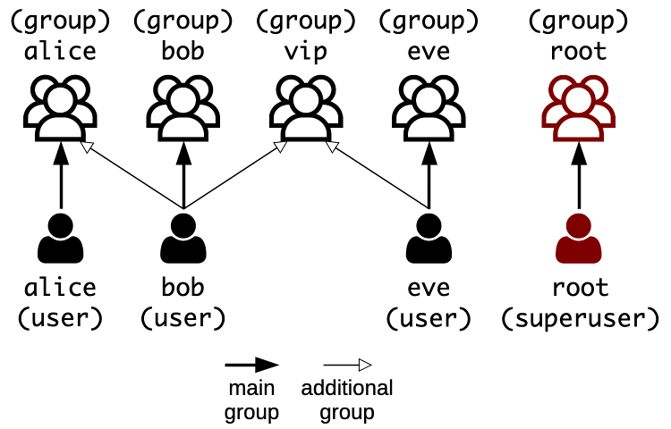

# Unix Basics Architecture & Deployment <!-- .element: class="subtitle" --> **Notes:** Learn the basics of Unix and Unix-like operating systems like Linux: their file system, their users, and the permissions that control who can do what. --- ## One tree ``` / ├── etc ├── home │ └── jde ├── mnt │ └── network-drive ← another disk, mounted here └── tmp ``` - **One root**, `/` - Other disks are **mounted** into the tree **Notes:** A Unix file system is **rooted**: there is always one root, denoted by the path `/`. Separate volumes such as disk partitions, removable media and network shares belong to the same file hierarchy. A volume is **mounted** on a directory, and its files then appear as that directory in the larger tree. This is unlike Windows, where each drive has a letter that is the root of its own file system tree, e.g. the `C:` and `D:` drives. The volumes mounted when the system boots are defined in the `/etc/fstab` file (**f**ile **s**ystems **tab**le). --- ### Case matters <div class="grid grid-cols-2 gap-8"> <div> <p><strong>macOS & Windows</strong></p> <p><code>a-file.txt</code><br /><code>A-FILE.txt</code></p> <p>The same file</p> </div> <div> <p><strong>Linux</strong></p> <p><code>a-file.txt</code><br /><code>A-FILE.txt</code></p> <p>Two different files</p> </div> </div> **Notes:** The file systems of macOS and Windows (APFS, HFS and NTFS) are usually **case-insensitive**: `a-file.txt` and `A-FILE.txt` are the same file, and you cannot create both in the same directory. The file systems of Linux (the ext family) are **case-sensitive**: the two names are two different files. Keep this in mind when you move files from your computer to a server. A file your code refers to as `Server.js` is found on your Mac even if it is named `server.js`, and not found on your Linux server. --- ## Users and groups <p></p> - A user is a **person** or a **service**: `alice`, `bob`, `sshd` - Each user has a **main group**, and can join others **Notes:** Unix systems are multi-user systems. A **user** is any entity that uses the system: a person, like Alice or Bob, or a system service, like a database or an SSH server. Each user account has a name and a numerical user ID (UID). A **group** also has a name and a numerical group ID (GID). Each user belongs to a main group, usually with the same name as the user, and can be added to other groups, which grants that user all the privileges of each group. --- ## Root and `sudo` - `root` can do **anything**: do not log in as `root` - `sudo <command>` runs one command as `root` - Who may use `sudo` is defined in `/etc/sudoers` **Notes:** The **superuser**, named `root`, has complete access to the system and its configuration. Logging in as `root` is dangerous: one wrong move can delete a system-critical file or lock you out of your own server. With the `sudo` command (**s**uper**u**ser **do**), a trusted user runs a single command as if by the `root` user, after typing **their own password**. The `/etc/sudoers` file defines which users are trusted to use `sudo`. On most systems, it trusts every member of the `sudo` group. Never edit it by hand: use the `visudo` command, which will not let you save a file with a syntax error. --- ### Who can list `/root`? ```bash $> ls /root $> sudo ls /root ``` > On a Linux system, `/root` is the home directory of the `root` user. It is not > under `/home` like the home directories of other users. **Notes:** `/root` is the home directory of the `root` user. Only `root` may list it: ```bash $> ls /root ls: cannot open directory '/root': Permission denied $> sudo ls /root [sudo] password for jde: ... ``` The first command runs as you and is refused. The second runs as `root`, after `sudo` has checked your own password. --- ## Permissions | Permission | For a file | For a directory | | :--------- | :-------------- | :----------------------------- | | `r` | **Read** it | **List** its contents | | `w` | **Write** to it | **Create** or **delete** files | | `x` | **Execute** it | **Traverse** it | For the **owner**, the **group** and **others** **Notes:** Each file and directory has three permissions, each of them either granted or not. They mean something slightly different for directories: `x` on a directory means you can traverse it, to reach the files and subdirectories inside it. Each of the three permissions is set for three categories of users: - The **owner**: the user who owns the file. - The **group**: any user in the group that owns the file. - **Others**: any other user of the system. --- ### Reading `ls -l` ``` -rw-r----- 1 bob vip 321 Jan 18 some-file ``` <table> <tbody> <tr><td><code>-</code></td><td>Type: a file (<code>d</code> for a directory)</td></tr> <tr><td><code>rw-</code></td><td>The owner, <code>bob</code>, can read and write</td></tr> <tr><td><code>r--</code></td><td>The group, <code>vip</code>, can read</td></tr> <tr><td><code>---</code></td><td>Others can do nothing</td></tr> </tbody> </table> **Notes:** The `-l` option (**l**ong format) of the `ls` command shows each file's type and permissions in its first column, and the file's owner and group in its third and fourth columns. The first column is ten characters: one for the type of the file, then three groups of three for the permissions of the owner, of the group, and of others. A `-` in place of a letter means that the permission is not granted. --- ### Changing ownership: `chown` ```bash $> chown alice:vip notes.txt # change owner and group $> chown alice notes.txt # change owner only $> chown :vip notes.txt # change group only ``` **Notes:** The `chown` command (**ch**ange **own**er) changes the owner and/or group of a file or directory. You can change both at once, or just one of them. Changing the owner of a file you do not own needs `sudo`. --- ### Changing permissions: `chmod` ```bash $> chmod u+x script.sh $> chmod g-w,o-rwx notes.txt $> chmod a=r readonly.txt ``` - **Who**: `u`ser (owner), `g`roup, `o`thers, `a`ll - **Change**: `+` add, `-` remove, `=` set exactly - **What**: `r`, `w`, `x` **Notes:** The `chmod` command (**ch**ange **mod**e) changes the permissions of a file or directory. In its **symbolic mode**, you name the categories of users, the change, and the permissions: - `chmod u+x script.sh` lets the owner execute the script. - `chmod g-w,o-rwx notes.txt` removes the group's write permission and all of the permissions of others. - `chmod a=r readonly.txt` sets the permissions of everyone to read only. Changing the permissions of a file you do not own needs `sudo`. --- ### Are you allowed? ```bash $> mkdir mydir $> echo "Hello" > mydir/mine.txt $> ls -l mydir $> chmod u-r mydir/mine.txt $> cat mydir/mine.txt $> chmod u+r mydir/mine.txt $> chmod u-r mydir $> ls -l mydir $> cat mydir/mine.txt $> chmod u-x mydir $> cat mydir/mine.txt ``` **Notes:** You own `mydir/mine.txt`, but once you have removed your own read permission, you cannot read it: ```bash $> cat mydir/mine.txt cat: mydir/mine.txt: Permission denied ``` Being the owner of a file does not exempt you from its permissions. As its owner, you can give yourself the permission back with `chmod u+r mydir/mine.txt`. Without the `r` permission on a directory, you cannot list its contents: ```bash $> ls mydir ls: cannot open directory 'mydir': Permission denied ``` But you can still read a file in it if you know its name, and have the `r` permission on the file itself, because you still have the `x` permission on the directory, i.e. the right to traverse it: ```bash $> cat mydir/mine.txt Hello ``` After removing your own `x` permission on the directory, you cannot traverse it anymore, and cannot read the file in it: ```bash $> chmod u-x mydir $> cat mydir/mine.txt cat: mydir/mine.txt: Permission denied ``` --- ### Octal mode These two commands are equivalent: ```bash $> chmod 755 script.sh $> chmod u=rwx,g=rx,o=rx script.sh ``` --- ### Base 10: decimal notation | Decimal digit | 4 | 9 | 3 | | :------------- | :------------- | :------------- | :------------- | | Position | 2 | 1 | 0 | | Position value | 10<sup>2</sup> | 10<sup>1</sup> | 10<sup>0</sup> | | Value | 4 × 100 | 9 × 10 | 3 × 1 | **Notes:** There are ten digits, 0 to 9. Each position is worth ten times the position to its right. --- ### Base 2: binary notation | Binary digit | 1 | 1 | 1 | 1 | 0 | 1 | 1 | 0 | 1 | | :------------- | :------------------------------------ | :------------------------------------ | :----------------------------------- | :----------------------------------- | :----------------------------------- | :---------------------------------- | :---------------------------------- | :---------------------------------- | :---------------------------------- | | Position | 8 | 7 | 6 | 5 | 4 | 3 | 2 | 1 | 0 | | Position value | 2<sup>8</sup> | 2<sup>7</sup> | 2<sup>6</sup> | 2<sup>5</sup> | 2<sup>4</sup> | 2<sup>3</sup> | 2<sup>2</sup> | 2<sup>1</sup> | 2<sup>0</sup> | | Value | <span class="text-2xl">1 × 256</span> | <span class="text-2xl">1 × 128</span> | <span class="text-2xl">1 × 64</span> | <span class="text-2xl">1 × 32</span> | <span class="text-2xl">0 × 16</span> | <span class="text-2xl">1 × 8</span> | <span class="text-2xl">1 × 4</span> | <span class="text-2xl">0 × 2</span> | <span class="text-2xl">1 × 1</span> | **Notes:** There are two digits, 0 and 1. Each position is worth twice the position to its right. --- ### Base 8: octal notation | Octal digit | 7 | 5 | 5 | | :------------- | :------------ | :------------ | :------------ | | Position | 2 | 1 | 0 | | Position value | 8<sup>2</sup> | 8<sup>1</sup> | 8<sup>0</sup> | | Value | 7 × 64 | 5 × 8 | 5 × 1 | **Notes:** There are eight digits, 0 to 7. Each position is worth eight times the position to its right. --- ### One number, several representations 493<sub>10</sub> 111101101<sub>2</sub> 755<sub>8</sub> CDXCIII **Notes:** A base is only a way of writing a number. In base 10, which we use every day, there are ten digits, and each position is worth ten times the position to its right. In base 2 (binary), there are two digits, and each position is worth twice the position to its right. In base 8 (octal), there are eight digits, and each position is worth eight times the position to its right. Three binary digits count from `000` to `111`, which is 0 to 7: exactly the digits of base 8. So one octal digit always stands for three binary digits, or **bits**. --- ### Permissions as bits <table class="text-3xl"> <thead> <tr> <th>Permissions</th> <th>Text</th> <th>Bits</th> <th>Octal</th> </tr> </thead> <tbody> <tr> <td>read, write, execute</td> <td class="text-center!"><code>rwx</code></td> <td class="text-center!">111</td> <td class="text-center!">7</td> </tr> <tr> <td>read, write</td> <td class="text-center!"><code>rw-</code></td> <td class="text-center!">110</td> <td class="text-center!">6</td> </tr> <tr> <td>read, execute</td> <td class="text-center!"><code>r-x</code></td> <td class="text-center!">101</td> <td class="text-center!">5</td> </tr> <tr> <td>read only</td> <td class="text-center!"><code>r--</code></td> <td class="text-center!">100</td> <td class="text-center!">4</td> </tr> <tr> <td>write, execute</td> <td class="text-center!"><code>-wx</code></td> <td class="text-center!">011</td> <td class="text-center!">3</td> </tr> <tr> <td>write only</td> <td class="text-center!"><code>-w-</code></td> <td class="text-center!">010</td> <td class="text-center!">2</td> </tr> <tr> <td>execute only</td> <td class="text-center!"><code>--x</code></td> <td class="text-center!">001</td> <td class="text-center!">1</td> </tr> <tr> <td>no permissions</td> <td class="text-center!"><code>---</code></td> <td class="text-center!">000</td> <td class="text-center!">0</td> </tr> </tbody> </table> **Notes:** Each permission is either granted or not, which can be represented by a bit: 1 for granted, 0 for not granted. Three permissions make three bits, which is one octal digit. Reading the bits as 4, 2 and 1, `r` is worth 4, `w` is worth 2 and `x` is worth 1. Adding them up gives the digit: `rwx` is 7, `r-x` is 5, and `---` is 0. --- ### Octal mode | Permissions | `rwx` | `r-x` | `r-x` | | :---------- | :---: | :---: | :---: | | Bits | 111 | 101 | 101 | | Octal | 7 | 5 | 5 | ```bash $> chmod 755 script.sh # rwxr-xr-x ``` **Notes:** Each category of users has three permissions. In its **octal mode**, `chmod` sets all of a file's permissions at once, with one digit for the owner, one for the group and one for others. `chmod 755 script.sh` gives the script the permissions `rwxr-xr-x`. `chmod` reads `755` as a number in base 8, not as seven hundred and fifty five. You never need to convert it to base 10: what matters is that each digit stands for one category of users.
GitHub
Backup copy